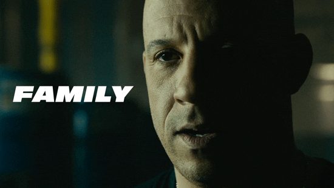
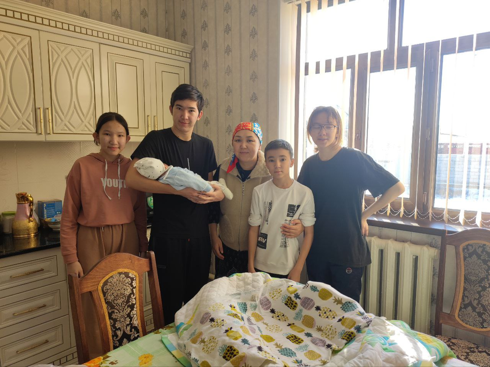

Отбасы - әрбір мүшенің өмірінде үлкен рөл атқаратын бірегей және маңызды қоғамдастық. Менің отбасымда алты адам бар: әке, ана, екі інім, екі қарындас және мен. Мен ата-анамның ең үлкен баласымын. Отбасының әрбір мүшесі отбасына өз үлесін қосып, жылу және қолдау атмосферасын жасайды. Әрқайсыңызды жеке-жеке қарастырайық:
Әкем әдетте отбасының басшысы және отбасы құрылымын сақтауда және ережелерді орнатады. Мен үшін әкем қорғаныш, дана кеңес, күш пен жауапкершіліктің үлгісі. Анам отбасының жүрегі, ол бүкіл үй шаруасына қамқорлық жасайды балаларға қарайды. Анамның сүйіспеншілігі, төзімділігі және қамқорлығы үйде жылы және жайлы атмосфера жасайды. Інілерім бүлдірмектердің рөлін ойнап, шаңыраққа қуаныш сыйлап, көңіл көтереді. Сонымен қатар үлкен отбасы мүшелерінен қолдау мен нұсқаулар алады. Кішкентай қарындастарым біздің үйге үлкен қуаныш пен тіршілік әкеледі. Үлкен аға ретінде мен оларды тәрбиелеу мен қорғауда маңызды рөл атқарамын.
Отбасылық қарым-қатынастар отбасының әрбір мүшесі ерекше рөл атқаратын және жалпы әл-ауқат пен келісімге үлес қосатын өмірдің ерекше маңызды бөлігі болып табылады. Сіз бірге көптеген естеліктер жасайсыз, қуаныштар мен қиындықтарды бөлісесіз және өмір бойы бір-біріңізге қолдау көрсетесіз.
